Discover Mechanical Engineering (DME)
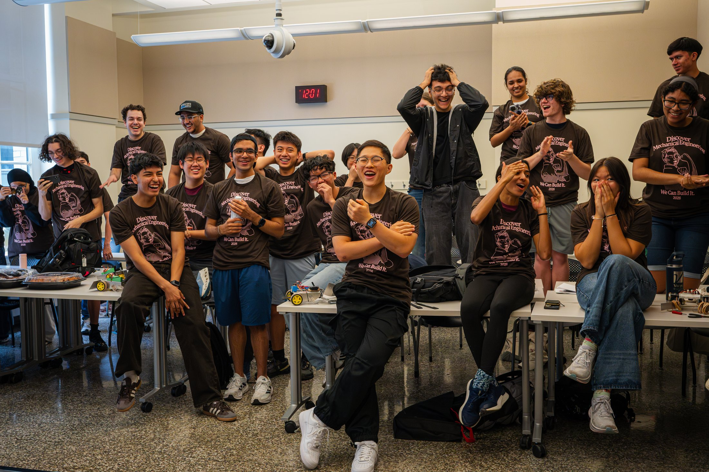
Design for manufacturing and assembly (DFMA)
Design for novice builders
Program management
Head Coordinator
Discover Mechanical Engineering (DME), MIT
March – August 2026
SOLIDWORKS
Adobe Illustrator
As Head Coordinator of Discover Mechanical Engineering (DME), an MIT pre-orientation program for incoming first-year students, I redesigned the program's soccer-robot build challenge for the first time since 2016. The new robot is smaller, simpler to fabricate, and built around custom ESP32 PCBs, and 30+ students — many with no build experience — finished it with time to spare in a program one day shorter than before. I also co-managed an $11K budget, delivering under budget.
Context/Motivation
DME is a pre-orientation program for incoming MIT first-years, built around a three-day challenge in which students build soccer-playing robots, each driven by two DC motors with a servo-driven paddle kicker. The robot design hadn't changed since 2016, and a new schedule meant the program had to run a full day shorter.
Problem Framing
I set out to make the robot smaller, simpler, and ready for custom electronics — without losing the core learning experience for students who, in many cases, had never built anything before. The redesign also had to fit the program's budget and the shortened schedule.
Process
Making it smaller
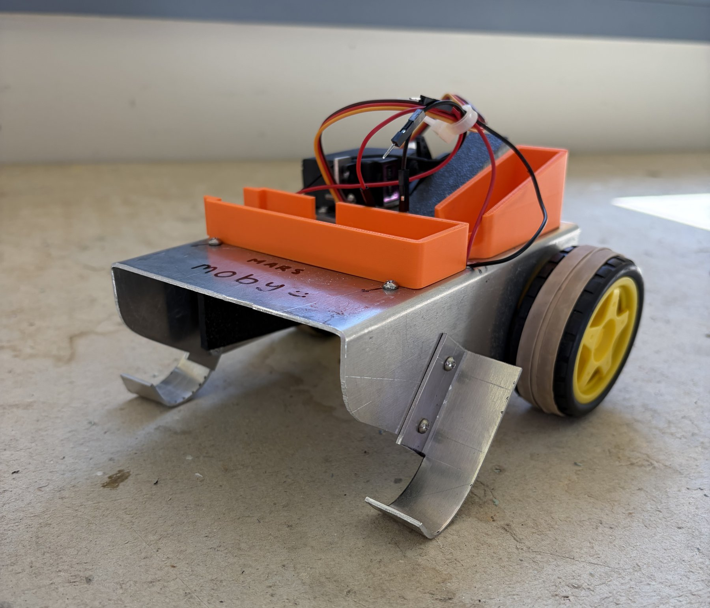
A smaller robot needs less material, which helps the budget, and could make gameplay more fun: less crowding on the field and faster bots. I ended up making the design of a total bot require only ~72 in² of aluminum — our most expensive material — reducing the amount we need to purchase to under half the original amount.
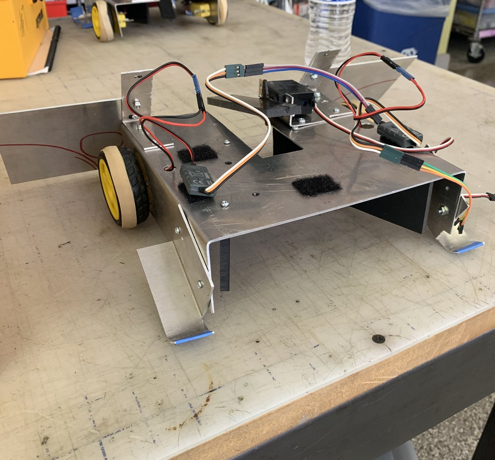
Previous design for reference
Making it simpler
I applied DFMA principles to cut fabrication time while keeping the core learning: removing redundant cuts, taking advantage of collinear features to reduce the number of scribes and punches, and reducing toolhead changes. I did my best to communicate these intentions to the students through a revamp of the instruction pamphlet, which may have turned out to be harder than the robot redesign itself.
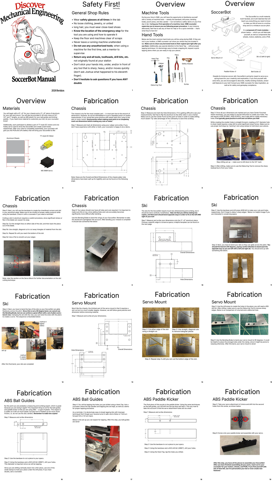
Making it... Bluetooth?
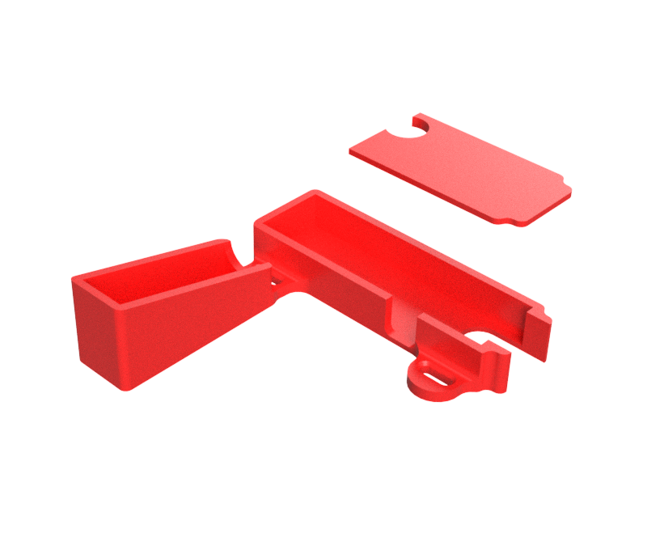
In previous years, receivers and controllers had consistent pairing issues, were expensive, and regularly blew out. My predecessor had worked on custom PCBs using ESP32 chips that connect to students' phones over Bluetooth, eliminating future costs for motor drivers, receivers, and controllers — but they arrived months late and missed the previous year's program. I redesigned the robot to integrate these boards, designing a simple custom PCB and LiPo housing focused on keeping everything accessible but secure.
Room for Improvement
The robot was a success, but some students still ended up with lopsided bots that couldn't keep both wheels on the ground. I traced it to inconsistent bending and drilling by first-time fabricators. That left me with an open question: how much should a design compensate for the error that comes with building something for the first time — and how much of that error is itself a valuable part of the learning?
Outcome
- All 30+ students completed their robots, with time to spare
- Program shortened by a full day
- $11K budget co-managed; delivered under budget
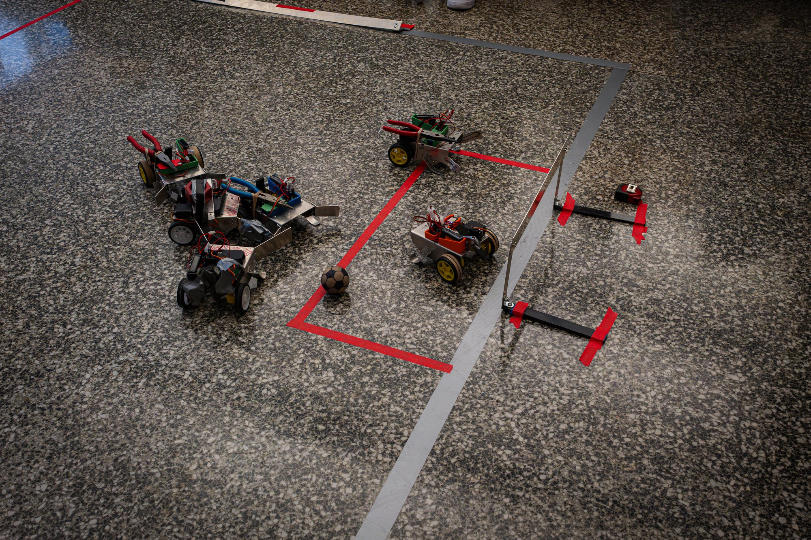
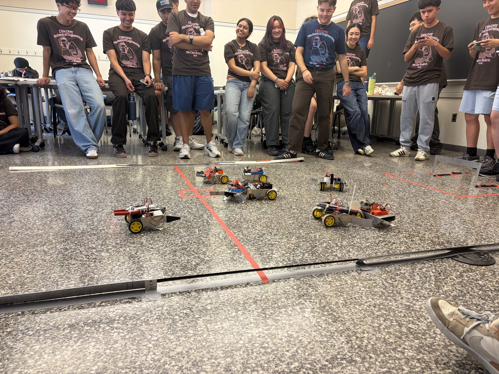
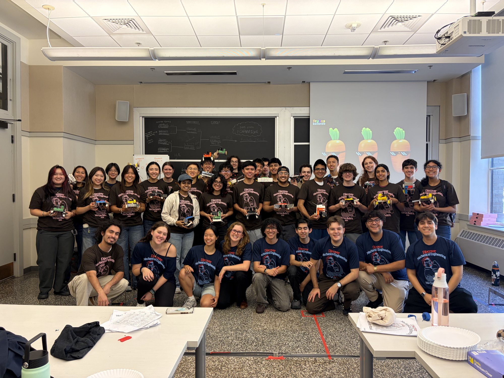
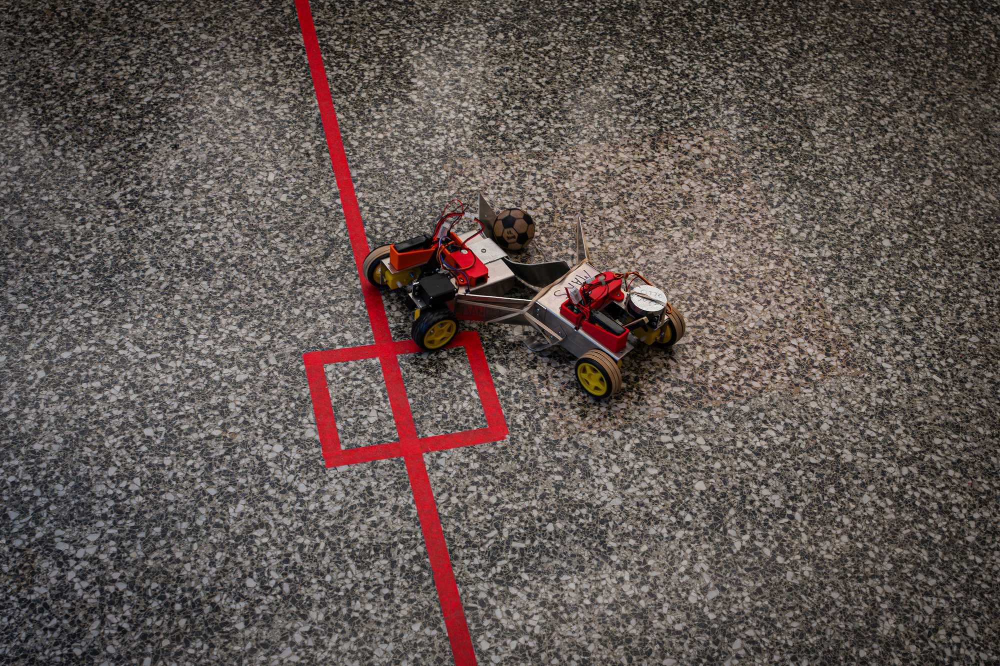
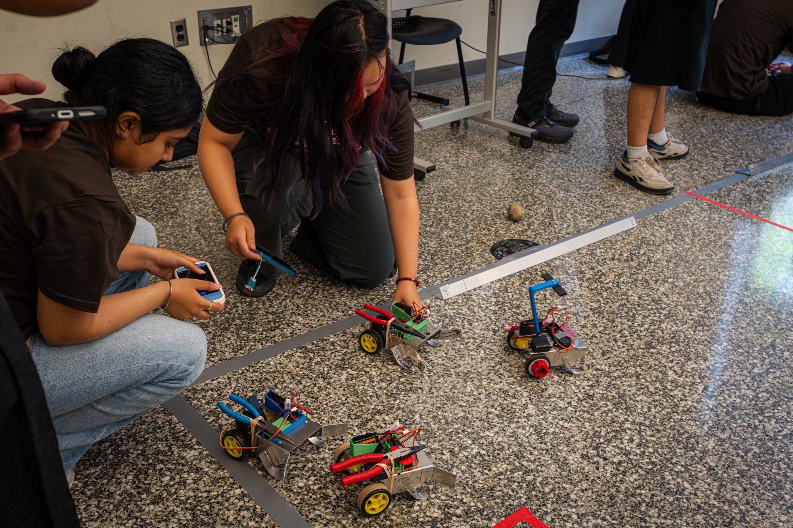
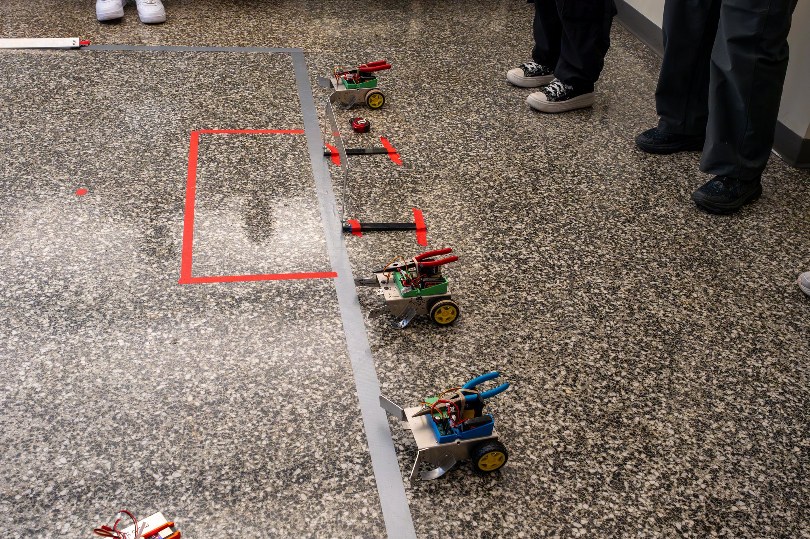
Reflection
DME was my first experience designing a curriculum of sorts: a blueprint students could easily learn from. I had to prioritize carefully to shorten the program without cutting content, while keeping spirits high and juggling the usual head coordinator responsibilities.